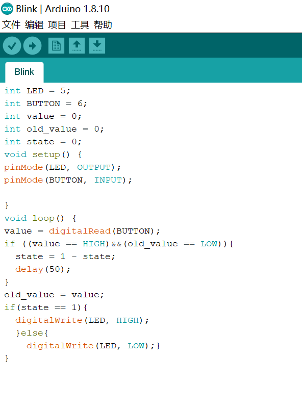

We found out that the button may "push" many times if you press it, and that is one problem that we needed to solve in order to make the light shine as we wanted it to. In order to do that, we added a "delay(500)" in middle of the code. That will hlep the light to do that because it will stop for 500 miniseconds before another "push" began, so it will be slower and better for us to use it. This problem caused us to think carefully before doing another program. Sometimes your code is right, but it can't connect to what you want.

Today we made a more complex project. I found a water vapor detector, and I coded it so it can detect the water vapor around up, and show it on the screen. Not only that, I added a little lightbulb that shines when the water vapor reaches 500. it the water vapor is low, it doesn't do anything. I found that the projects like this are very useful in real life, and we can do little things to help us.
this is my code:
int LED = 13;
int val = 0;
void setup() {
Serial.begin(9600);
Serial.println("Max is awesome!");
// put your setup code here, 1to run once:
pinMode(LED,OUTPUT);
}
void loop() {
// put your main code here, to run repeatedly:
//digitalWrite(LED,HIGH);
val = analogRead(A2);
if (val>500){
digitalWrite(LED,HIGH);
}
if (val<500) {
digitalWrite(LED,LOW);
}
Serial.println(val);
delay(100);}